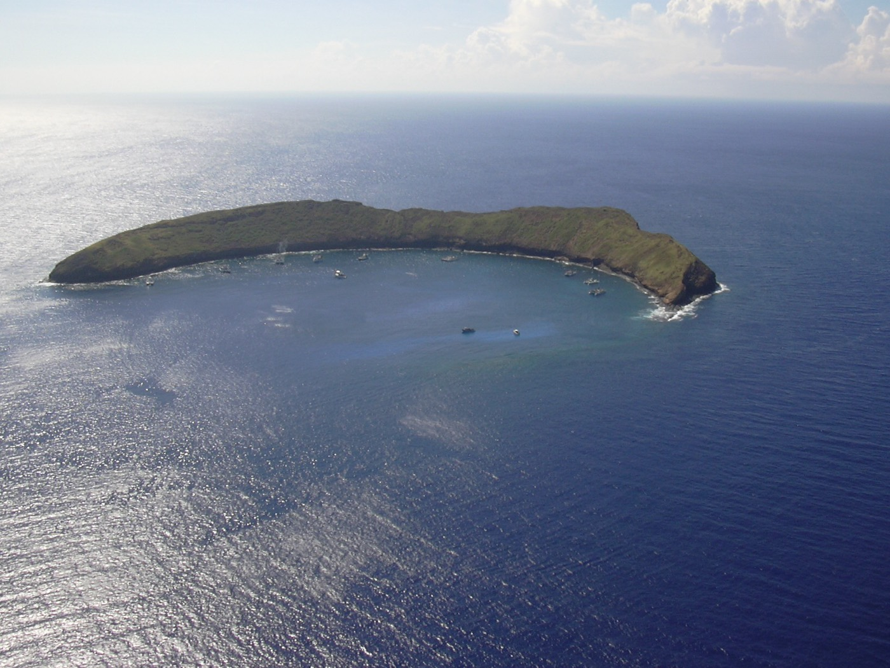
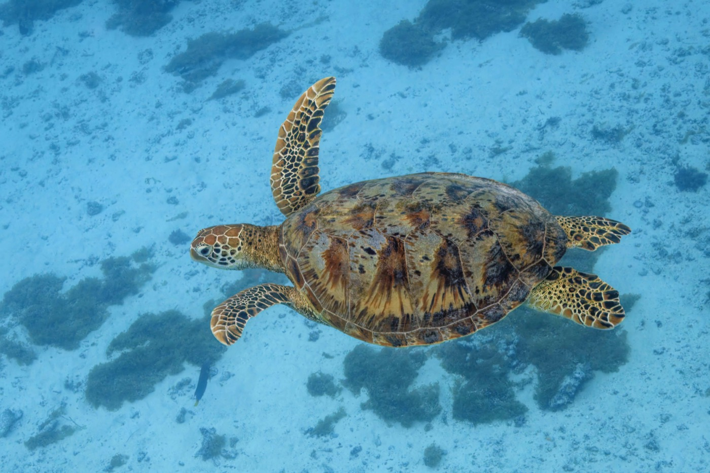
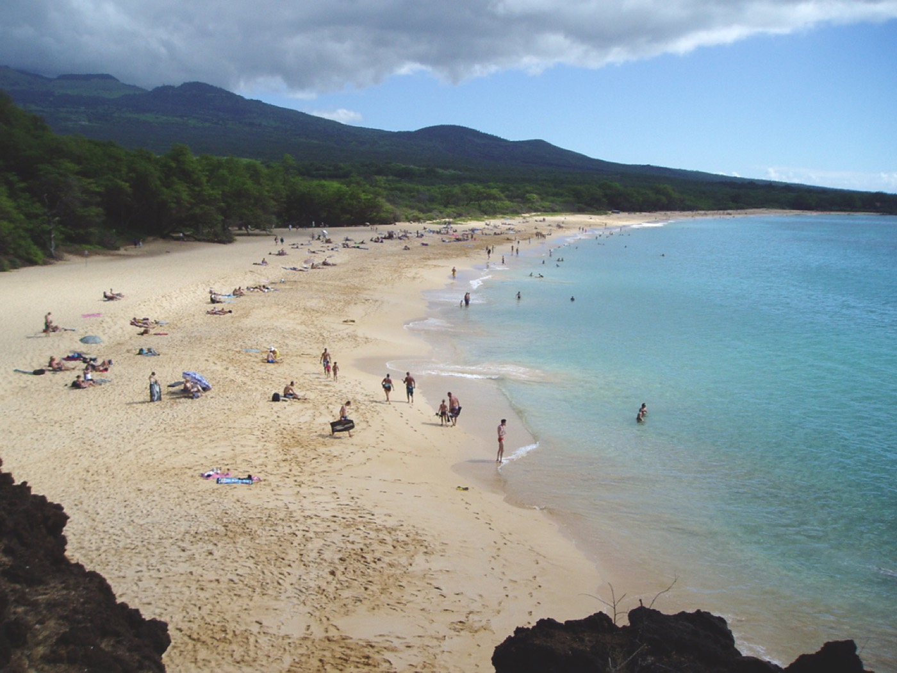
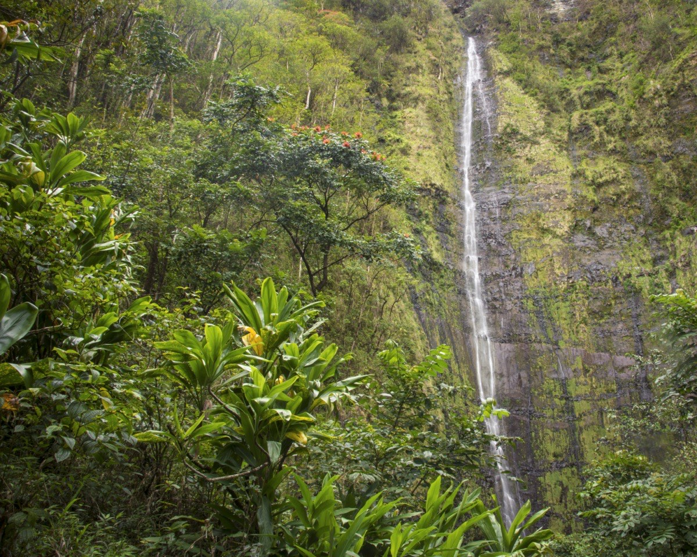
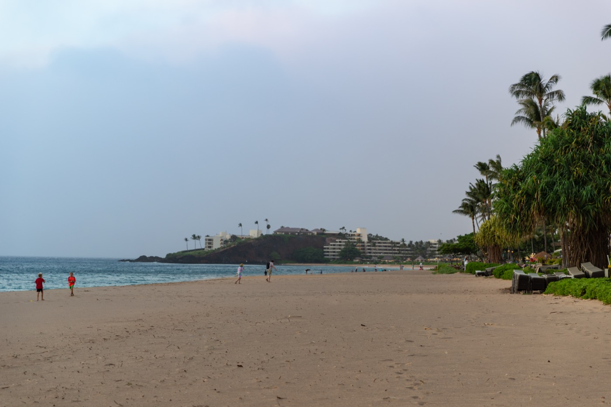
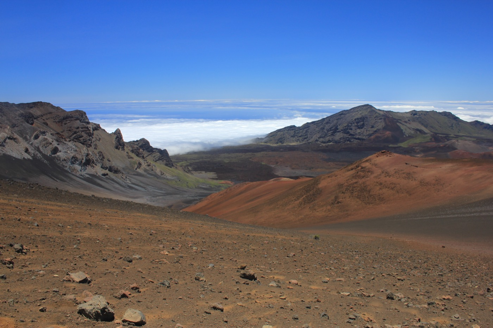

Maui had always been a distant dream of mine — a place of tropical wonders, unspoiled beauty, and thrilling adventures. The moment I stepped off the plane and felt that warm, plumeria-scented air, I knew I was in for something extraordinary. Whether you're chasing a serene escape or a heart-pounding adrenaline rush, Maui somehow has both, often in the same day.
This is the trip I daydream about most — hidden beaches, cliff jumps, a sunrise above the clouds, and a genuine dive into Hawaiian culture. Below is everything I did and everything I learned, turned into a real plan you can use: where to stay, when to go, how to actually pull off the Road to Hana and the Haleakala sunrise, and how to do it all as a respectful guest of the islands. Let's get you to Maui.
When to Visit Maui
Here's the beautiful thing: there's no bad time to go. Daytime temperatures hover in the upper 70s to mid-80s year-round. That said, the season shapes the trip:
- April–May and September–October are the sweet spot — warm, drier, thinner crowds, and better prices. If I had to pick, I'd go in one of these shoulder windows.
- December–April is peak season and also humpback whale season — from the right beach or a boat you'll see them breaching offshore. Book early; it's the busiest and priciest stretch.
- Winter brings more rain to the north and east side, which is exactly what keeps the Road to Hana and the waterfalls so impossibly green.
Getting There & Getting Around
Almost everyone flies into Kahului Airport (OGG) in central Maui. From there, the single most important piece of advice in this whole guide: rent a car. Maui has essentially no useful public transit, and rideshare is limited and expensive. Without a car you can't reach the beaches, the Road to Hana, or Haleakala — with one, the whole island opens up. Book it as far ahead as you can, because rentals genuinely sell out and prices spike in busy months. Fill the tank when you can, download offline maps, and embrace island time behind the wheel.
Where to Stay: Hostel Vibes to Oceanfront Luxury
My two stays couldn't have been more different, and honestly, that was the magic of it. I started at Howzit Hostels — a friendly, laid-back spot with a homey feel and an easy way to meet fellow travelers. If you want a social, budget-friendly, local vibe, that's the move. Later I upgraded to the Westin Nanea Ocean Villas, where the ocean views, swaying palms, and resort amenities delivered pure, unbothered relaxation. Mixing a hostel and a resort gave me the best of both worlds — community and adventure up front, luxury downtime to recover.
Where you base yourself matters. A quick lay of the land:
- West Maui (Kaanapali & Lahaina side): classic resort coast — big beaches, sunsets, Black Rock. Note that this area is in active recovery after the 2023 wildfires (more on visiting respectfully below).
- South Maui (Kihei & Wailea): the sunniest, driest side — great beaches, closest to the Molokini boats, condos and resorts for every budget.
- Upcountry (Makawao, Kula): cooler, greener ranch country on Haleakala's slopes — perfect if you're doing the sunrise.
- Paia & the North Shore: a funky surf town and the gateway to the Road to Hana.
Snorkeling: Turtle Town & Molokini
If you're even remotely curious about snorkeling, Turtle Town and Molokini are non-negotiable. I hopped on a snorkel boat out to water so clear it felt like looking through glass. Seeing Hawaiian green sea turtles glide past at Turtle Town was a nature-documentary moment — slow, graceful, utterly unbothered by us. And Molokini, a crescent-shaped volcanic crater rising out of the ocean, is a protected marine sanctuary bursting with color: walls of tropical fish, coral, and visibility that regularly tops 100 feet.

Molokini — a sunken volcanic crater and one of the best snorkel sites in Hawaii.
A few things that make or break it: book a morning trip, before the afternoon wind churns up the water; most Molokini boats leave from Maalaea Harbor. And two rules that matter — Hawaii law requires reef-safe (mineral) sunscreen to protect the coral, and it's illegal to touch or crowd sea turtles (give them at least 10 feet). Look, don't touch, and the reef stays magic for the next person.

A honu (green sea turtle) — protected by law, so admire from a respectful distance.
Hidden Beaches: Makena Cove & Big Beach
Maui is full of hidden gems, and Makena Cove — often called Secret Beach — is one of the best. Tucked behind a lava-rock wall, it's a tiny pocket of white sand and turquoise water that feels like your own private slice of the island; it's a favorite for quiet mornings and, unsurprisingly, weddings and photos. Just down the road, Big Beach (Oneloa) in Makena is the opposite energy — a huge, wide-open expanse of golden sand and space to breathe.

Big Beach in Makena — wide, wild, and quintessentially Hawaiian.
One honest safety note: Big Beach has a powerful shorebreak that has injured plenty of overconfident swimmers — respect the waves and watch the conditions. And for the free spirits, tiny Little Beach over the rocky headland is Maui's famous clothing-optional beach — relaxed, welcoming, and simply a different vibe if that's your thing.
The Road to Hana
Ah, the Road to Hana — the stuff of legend. This isn't a drive to somewhere; the drive is the somewhere. Roughly 64 miles of about 600 curves and 59 one-lane bridges unspool along the northeast coast past waterfalls, rainforest, bamboo groves, and black-sand beaches. The secret is not to rush: every pullout seems better than the last.
How to actually do it well:
- Start at dawn to beat the caravan of cars and give yourself the whole day.
- Gas up and grab food in Paia — services are scarce once you're out there.
- Download offline maps (and consider a GPS audio guide) — cell signal disappears.
- Reserve Waianapanapa ahead — the famous black-sand beach and state park now requires a timed entry reservation for non-residents.
- Be a good guest — much of the land is private and these are living communities. Don't block driveways, don't trespass for that photo, and yield with a shaka.
Highlights along the way: Twin Falls, the Waikamoi rainforest trail, the Keanae Peninsula lookout, the black-sand cove at Waianapanapa (that's the hero photo up top), and — near the end — the Pipiwai Trail, which climbs through a towering bamboo forest to the 400-foot Waimoku Falls. My personal favorite was a bit beyond Hana: Venus Pool (Waioka), a gorgeous natural swimming hole known for cliff jumping. Leaping off those rocks into the cool water below was pure adrenaline — though access crosses private land and has come and gone over the years, so check current conditions and respect any closures.

Waimoku Falls, the 400-foot payoff at the end of the bamboo-lined Pipiwai Trail.
Cliff Jumping: Venus Pool & Black Rock
Back near Kaanapali, I found another cliff-jumping haven: Black Rock (Puu Kekaa). It's steeped in legend — believed to be a place where souls leap into the afterlife — and standing on top of it, waves crashing below and the sun sinking into the Pacific, you feel like you're part of something ancient. Each evening the Sheraton stages a torch-lighting and cliff-diving ceremony here that's worth catching. And the bonus: after your jump, the snorkeling right around the rock is excellent, with turtles and reef fish in the shallows.

Kaanapali Beach and Black Rock (Puu Kekaa) — cliff-jumping legend and sunset snorkel spot.
A word of caution, because it matters: cliff jumping is genuinely dangerous. Water depth changes with the tide and swell, submerged rocks move, and people get seriously hurt every year. Watch locals, check the conditions, never jump into water you haven't checked, and when in doubt, don't. The photo is not worth your neck.
Chasing the Sunrise: Haleakala
If you do one bucket-list thing on Maui, make it the Haleakala sunrise. Waking at 3 a.m. is never fun, but the reward is unreal. Haleakala rises over 10,000 feet, and watching the sky shift from deep purple to blazing orange above a sea of clouds is a genuinely spiritual experience — you feel simultaneously tiny and completely alive.
The practical part, because this one trips people up:
- You need a reservation. Sunrise entry (roughly 3–7 a.m.) requires a timed reservation booked ahead on recreation.gov, plus the national park entrance fee. They sell out — grab one early.
- Dress for winter. It's often in the 30s–40s°F with wind at the summit, even in summer. Bring real layers, a hat, and gloves; everyone underestimates this.
- Give yourself time — it's a long, dark, winding drive up, so leave early and arrive with margin.
- Hate 3 a.m.? Sunset at Haleakala is nearly as spectacular and requires no reservation. It's also incredible for stargazing.

Haleakala's summit — a Mars-like crater floating above the clouds at 10,000 feet.
A Sunset Sail with Teralani
I'm a sucker for a good sunset, and there's no better seat than the deck of a catamaran. I booked a sunset cruise with Teralani out of Kaanapali, and it was easily a trip highlight. As we sliced through calm water, the sky detonated into orange, pink, and purple, the crew kept the drinks and snacks coming, and the sun melted into the Pacific. In winter, these same cruises double as whale-watching — humpbacks breaching a stone's throw from the boat. It's the kind of evening you want to pause and live in.
A Night of Culture: The Old Lahaina Luau
My final night was spent at a traditional Hawaiian luau, and it was the perfect close. The feast alone — kalua pork pulled from an underground imu oven, poi, fresh fish, haupia — was an experience. But the heart of it was the storytelling: learning Hawaiian history and watching hula danced not as a show but as living narrative, each movement carrying meaning. By the end of the night I felt a real connection to this island and its people. A luau done right isn't a dinner theater; it's an education wrapped in generosity.
Visiting Maui Mindfully
One important note. In August 2023, devastating wildfires swept through Lahaina, the historic west-side town, taking lives and leveling much of a place central to Hawaiian history and culture. As the community rebuilds, being a thoughtful visitor matters more than ever. Travel here with care: respect closures and any areas asked to be kept private, support locally owned businesses and Native Hawaiian makers, and treat the island's sacred sites and residents with humility. Tourism, done respectfully, is a real part of the recovery — but Maui is a home first and a destination second. The Hawaiian value of malama — to care for — applies to the land, the ocean, and the people alike.
What to Eat
Hawaiian food is its own reason to visit. Come hungry for:
- Poke — cubed raw fish over rice; even the grocery-store poke here is spectacular.
- Plate lunch — the local staple: two scoops rice, mac salad, and something like kalua pork or teriyaki chicken.
- Shave ice — real Hawaiian shave ice (get it with li hing mui or a snow cap) beats any mainland snow cone.
- Malasadas — pillowy Portuguese doughnuts, best warm.
- Fresh fish — mahi-mahi, ono, opah; a splurge at the legendary Mama's Fish House is worth booking way ahead.
- Maui Gold pineapple and the island's farmers markets — sweeter than you thought possible.
A Suggested 7-Day Maui Itinerary
If you want a starting skeleton, here's a balanced week:
- Day 1: Arrive, settle in, sunset and dinner near your base.
- Day 2: Morning Molokini + Turtle Town snorkel trip; afternoon beach and pool.
- Day 3: The Road to Hana — all day, dawn start.
- Day 4: Recover on the South Maui beaches — Big Beach, Makena Cove, Wailea.
- Day 5: Haleakala sunrise (reserved), nap, easy Upcountry afternoon.
- Day 6: Kaanapali and Black Rock, snorkeling, a Teralani sunset sail.
- Day 7: A luau to close it out, or a slow last beach morning before flying home.
Frequently Asked Questions
How many days do you need in Maui?
Five to seven days is ideal for a first trip — enough for the Road to Hana, a Haleakala sunrise, a Molokini snorkel, and real beach time without rushing. Ten lets you truly slow down.
What's the best time to visit?
Year-round it's warm, but April–May and September–October offer the best mix of good weather, fewer crowds, and lower prices. December–April is peak season and whale season.
Do I need a rental car?
Yes — essentially required. Transit is minimal and rideshare is limited, so a car is how you reach the beaches, Hana, and Haleakala. Book early.
Is the Road to Hana worth it?
Completely, as a full-day journey. Start at dawn, download offline maps, gas up in Paia, reserve Waianapanapa, don't rush, and be respectful of the communities you pass.
Do I need a Haleakala sunrise reservation?
Yes — sunrise entry requires a timed reservation on recreation.gov plus the park fee. Sunset doesn't. Dress very warm; it's near freezing at the top.
Why Maui Stole My Heart
Maui is more than an island — it's an experience that lingers long after you've flown home. From the adrenaline of a cliff jump to the stillness of a hidden cove, from a sunrise above the clouds to a hula danced by firelight, it hands every kind of traveler exactly what they came for. If it's been sitting on your someday list, take this as your sign. Go with an open heart, tread lightly, and let Maui do the rest. Aloha.
Image credits: Waianapanapa black-sand beach & Kaanapali Black Rock by dronepicr (CC BY 2.0); Molokini by Forest & Kim Starr (CC BY 3.0); green sea turtle by Charles J. Sharp (CC BY-SA 4.0); Big Beach by Travisthurston (CC BY-SA 3.0); Waimoku Falls by Thomas (CC BY-SA 2.0); Haleakala by Navin75 (CC BY-SA 2.0). Cropped and resized from the originals.